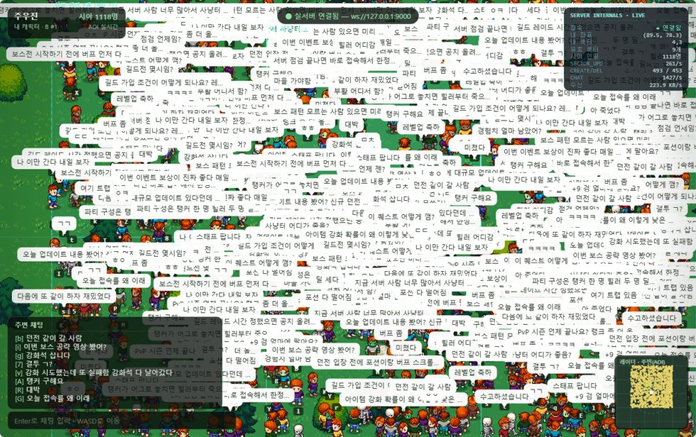

게임
컨텐츠
MMO_Zone · 2D 탑뷰 MMORPG
서버부터 웹 클라까지
직접 만든 MMORPG
존 서버가 맵을 섹터로 나눠 돌리고, 계정 · 캐릭터 · 월드 서버가 그 앞뒤를 맡는다. 판정은 전부 서버가 하고 웹 클라는 그리기만 한다.
5,000명동시 접속 · 한 PC 부하 시험
4개서버 · 계정 · 캐릭터 · 월드 · 존
01 · 컨텐츠
사냥
기술 다섯 칸. 광역 기술은 둘레 몬스터를 한꺼번에 친다. 맞았는지와 피해량은 서버가 정하고, 클라는 받은 숫자를 띄운다.
존 서버 — 몬스터 · 기술 판정 · 피해
02 · 컨텐츠
파티 · 거래
파티는 8명까지, 채널이 달라도 같은 파티다. 거래는 서로 물건과 돈을 올린 뒤 교환하기 — 한 번 올린 것은 못 뺀다.
월드 서버 — 파티 · 존 서버 — 거래
03 · 컨텐츠
우편
캐릭터 우편과 계정 우편 두 갈래. 물건 8칸과 돈을 붙여 보내고, 첨부를 받으면 우편이 사라진다.
존 서버 — 캐릭터 우편 · 계정 서버 — 계정 우편 · 월드 서버 — 그 사이 중계
핵심 최적화 다섯 가지
WSASend 호출 묶기N회 → 1회Send Coalescing
같은 세션의 Msg N개를 틱 끝에 모아 한 번 호출합니다. (그림은 N=4 예시)
250명에서 5,000명까지, 실서버 연결 화면
1웹 클라이언트 더미 250명픽셀로 그린다
250명 접속 · 클라에 오는 것은 3×3 유효 섹터 안뿐 · 인원은 왼쪽 위 지표
2콘솔 클라이언트 더미 1,000명문자로 그린다
80×21 콘솔창 · 알파벳 = 사람 · 아래 = 주변 채팅
3같은 웹 화면 더미 5,000명

시야 1,118명 · 채팅 1,427건/초 · 수신 223.9KB/초 — 서버는 정상, 화면 식별 어려움
게임
대전

세 편이 차례로 이어서 재생 · 칸을 누르면 그 직업으로
녹스 Nox · 2000 · 웨스트우드 쿼터뷰 액션 RPG
2000년 정품 클라를
내 서버에
방장 PC 한 대가 판 하나를 맡던 멀티를, 서버 한 대가 방 여러 개를 받는 구조로 넓혔다. 그 위에 로그인 · 로비 · 랭크 매칭 · 전적.
320방+동시 방 · 부하 도구 상한에서 멈춤
−59%틱 합 · 병목 7차례
「Nox」는 EA의 상표이고, 게임 저작권은 Westwood Studios(2000)에 있습니다. 이 서버는 EA와 관계없는 팬의 비공식 학습 프로젝트이며, 배포 · 운영하지 않습니다.
01 · 직업 소개
세 직업
이 서버에 붙은 정품 클라 화면 그대로 — 글자 · 음악 없이 게임 소리만.
게임 서버 — 주문 판정 · 몬스터 움직임 · 피해 계산
02 · 대전
일반 대전
방을 만들고, 목록에서 골라 들어간다. 방 여러 개가 한 게임 서버에서 같이 돈다.
목록의 ld001~ld100 은 촬영용 더미 방이다 — 게임 서버처럼 로비에 붙어 방만 알리는 스크립트로 채웠고, 들어갈 수는 없다.
03 · 대전
랭크 매칭
버튼 → 줄 서기 → 상대를 찾으면 수락 창 10초 → 둘 다 수락하면 랭크 방. 판이 끝나면 점수와 전적이 두 계정에 같이 남는다.
촬영 설정 — 대전 맵 하나(MiniMine) · 한 번 쓰러지면 판 끝 · 전사의 이동과 공격은 서버 쪽 촬영 대본.
동시 방
192→224→240→272→320+
· 부하 도구 상한(3,200명)에 닿음
64방 · 5분 · 세 판 중앙값 — 틱 합(ms/초) · 짧을수록 좋음누적 288.4 → 117.5 (−59%)
MO_Shooter · 언리얼 Lyra 클라
Lyra 는 그리기만,
판정은 내 서버가
60Hz서버 고정 틱 · 방마다
0.3초되감기 한도 · 쏜 사람 기준
게임플레이
- 한 판
- 5대5 · 팀 30킬 또는 20분
- 부활
- 5초 뒤 자동 · 2.75초 무적
- 받침
- 체력 5곳 · 무기 10곳
- 점수판
- 처치 · 죽음 · 도움
Lyra 그림 · 애니 © Epic Games · 언리얼 엔진 EULA
전체 구조
Lyra 클라
Epic 의 Lyra 샘플 그대로 — 화면 · 애니 · HUD · 소리. 사람이 하는 클라다.
스스로 판정하지 않는다 — 다리가 막는다
전체 구조
MOBridge 다리
Lyra 에 붙인 플러그인. 입력을 서버로 보내고, Lyra 가 스스로 내리던 판정을 막은 뒤 서버 결과를 Lyra 시스템에 넣는다. 내 캐릭터는 공용 계산으로 먼저 움직여 본다(예측).
서버와 TCP · 프로토콜 18
전체 구조
봇 클라
그림 없이 같은 프로토콜로 붙어 걷고 쏜다. 판정 대조와 부하 측정에 쓴다.
사람 판의 상대로도 들어간다
전체 구조
라우터
접속 · 끊김 · 인사를 한 곳에서 받아, 자리가 남은 가장 앞 방에 앉히고 없으면 새 방을 만든다. 로그인 · 로비는 아직 없다.
앉은 뒤 입력은 네트워크 워커가 그 방의 게임 스레드로 바로 넣는다 · 네트워크는 직접 만든 ServerCore(IOCP)
전체 구조
게임 스레드 · 방
스레드 하나가 고정 배정된 방들을 60Hz 로 돌린다. 방 안 상태는 그 스레드만 만진다. 방 하나에 최대 10명.
사격은 쏜 사람 화면 시점으로 최대 0.3초 되감아 판정
전체 구조
뽑은 자료
맵 충돌 · 애니 클립 · 체력 · 무기 받침과 점프대 자리. Lyra 에셋에서 도구로 뽑아 서버가 읽는다 — 서버는 언리얼 없이 돈다.
Epic 에셋이라 뽑은 파일은 리포에 넣지 않는다
전체 구조
Shared 공용 계산
이동 · 충돌 · 사격 판정 · 애니 자세 · 패킷 형식. 서버 · 다리 · 봇이 같은 파일을 빌드한다. Lyra 실행 기록과 같은 조건으로 돌려 결과를 견주는 대조 도구 10개로 확인한다.
그래서 클라 예측과 서버 판정이 같은 식으로 나온다